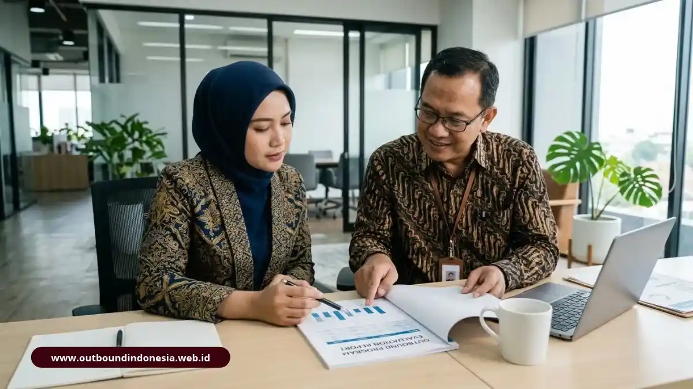

Mengukur keberhasilan outbound training dilakukan dengan menetapkan target perilaku sebelum acara, mengumpulkan data reaksi dan pemahaman peserta saat acara, lalu mengamati perubahan perilaku dan hasil kerja beberapa minggu sesudahnya.
Mengapa Kepuasan Peserta Saja Tidak Cukup untuk Menilai Outbound?
Kepuasan hanya menunjukkan peserta menyukai acara, bukan bahwa mereka belajar atau berubah. Program yang menyenangkan bisa tetap gagal memperbaiki kerja sama di kantor.
Banyak laporan kegiatan berhenti pada skor kepuasan dan foto dokumentasi. Padahal perusahaan membayar untuk perubahan, bukan hiburan. Kepuasan tetap berguna sebagai data awal, misalnya untuk menilai kualitas fasilitator dan logistik, tetapi harus dilengkapi indikator yang lebih dalam.
Bagaimana Kerangka Empat Level Kirkpatrick Dipakai untuk Outbound?
Kerangka Kirkpatrick, yang dipublikasikan Donald Kirkpatrick pada 1959, membagi evaluasi pelatihan menjadi empat level: reaksi, pembelajaran, perilaku, dan hasil. Keempatnya dapat dipakai langsung pada program outbound:
- Level 1, reaksi: bagaimana peserta menilai acara, fasilitator, dan materi. Datanya diperoleh lewat kuesioner singkat di akhir hari.
- Level 2, pembelajaran: apa yang peserta pahami dan simpulkan. Dapat dinilai lewat refleksi tertulis atau diskusi kelompok.
- Level 3, perilaku: apakah peserta menerapkan sikap baru di pekerjaan. Diamati dalam rentang minggu sampai bulan.
- Level 4, hasil: apakah ada dampak pada kinerja unit, seperti berkurangnya keterlambatan koordinasi atau meningkatnya penyelesaian proyek lintas tim.
Semakin tinggi levelnya, semakin sulit diukur dan semakin besar nilainya bagi organisasi.
Bagaimana Menetapkan Target Keberhasilan Sebelum Acara?
Tetapkan target dengan menuliskan perilaku spesifik yang ingin berubah, kondisi awalnya, dan cara pengamatannya. Target yang kabur seperti "tim lebih kompak" sulit dievaluasi.
Contoh target yang bisa diamati: rapat lintas divisi dimulai dengan penyepakatan tujuan, anggota tim menyampaikan hambatan lebih awal, atau jumlah serah terima pekerjaan yang membingungkan berkurang.
Ambil gambaran kondisi awal lewat wawancara singkat atau pengamatan sebelum outbound agar ada pembanding.
Apa Indikator Perubahan Perilaku Setelah Outbound?
Indikator perubahan perilaku adalah tanda yang bisa diamati di tempat kerja, seperti komunikasi yang lebih terbuka, pembagian tugas yang lebih jelas, dan keberanian menyampaikan masalah lebih dini:
- Anggota tim lebih sering saling membantu tanpa diminta.
- Konflik dibicarakan langsung, bukan dipendam.
- Rapat lebih terarah dan semua orang berkesempatan bicara.
- Pengambilan keputusan lintas divisi lebih cepat.
- Peserta memakai istilah atau cara kerja yang dipelajari saat outbound.
Indikator ini sebaiknya dinilai oleh lebih dari satu sumber, misalnya atasan langsung dan rekan satu tim, agar tidak bias.

Lembar pengamatan perubahan perilaku tim setelah outboundKapan Waktu Terbaik Melakukan Evaluasi Outbound?
Evaluasi dilakukan bertahap: reaksi di hari kegiatan, pemahaman segera setelahnya, perubahan perilaku sekitar empat sampai dua belas minggu kemudian, dan dampak hasil setelah beberapa bulan.
Jeda waktu diperlukan karena kebiasaan baru butuh waktu untuk terbentuk atau menghilang. Evaluasi satu bulan setelah acara biasanya cukup untuk melihat apakah komitmen peserta masih berjalan. Evaluasi tiga bulan membantu menilai apakah dampaknya konsisten.
Metode Apa yang Bisa Dipakai untuk Mengumpulkan Data Evaluasi?
Metode umum meliputi kuesioner, refleksi tertulis, wawancara, pengamatan atasan, dan data kinerja unit. Gabungan beberapa metode memberi gambaran yang lebih lengkap daripada satu sumber saja:
- Kuesioner singkat: untuk reaksi dan kesan terhadap fasilitator.
- Lembar refleksi: untuk melihat pelajaran yang dirumuskan peserta.
- Wawancara atau diskusi kelompok: untuk menggali cerita perubahan.
- Lembar pengamatan perilaku: diisi atasan dalam periode tertentu.
- Data kinerja: misalnya waktu penyelesaian proyek lintas tim.
Pilih metode yang ringan agar benar-benar dijalankan. Evaluasi yang terlalu rumit biasanya tidak selesai.
Apa Kesalahan Umum dalam Mengevaluasi Outbound Training?
Kesalahan umum adalah mengevaluasi hanya di hari acara, tidak punya kondisi awal sebagai pembanding, menilai kegiatan dari keseruan, dan tidak melibatkan atasan dalam pengamatan.
Kesalahan lain adalah menyimpulkan sebab-akibat terlalu cepat. Perubahan kinerja bisa dipengaruhi faktor lain, seperti pergantian pimpinan atau perubahan sistem. Gunakan bahasa hati-hati dan sebutkan bahwa outbound adalah salah satu faktor yang berkontribusi, bukan satu-satunya penyebab.
Bagaimana Hasil Evaluasi Dipakai untuk Memperbaiki Program Berikutnya?
Hasil evaluasi dipakai untuk menyesuaikan tujuan, memilih aktivitas yang lebih relevan, memperbaiki fasilitasi, dan menentukan perlu tidaknya pelatihan lanjutan bagi tim tertentu.
Misalnya, bila peserta menyukai acara tetapi perilaku tidak berubah, kemungkinan debriefing atau dukungan atasan perlu diperkuat. Bila perilaku berubah pada satu divisi tetapi tidak pada divisi lain, periksa apakah ada hambatan struktural. Dengan siklus ini, outbound menjadi bagian dari perbaikan berkelanjutan.
Kesimpulan Praktis
Mengukur keberhasilan outbound training berarti menghubungkan acara dengan perubahan nyata di tempat kerja.
- Tulis target perilaku dan kondisi awal sebelum acara.
- Gunakan empat level Kirkpatrick sebagai kerangka.
- Evaluasi bertahap, termasuk pengamatan beberapa minggu setelah kegiatan.
- Libatkan atasan dan gunakan lebih dari satu sumber data.

Tim Outbound Indonesia
Spesialis Learning & Development, konsultan evaluasi pelatihan korporat, dan master game bersertifikasi BNSP.